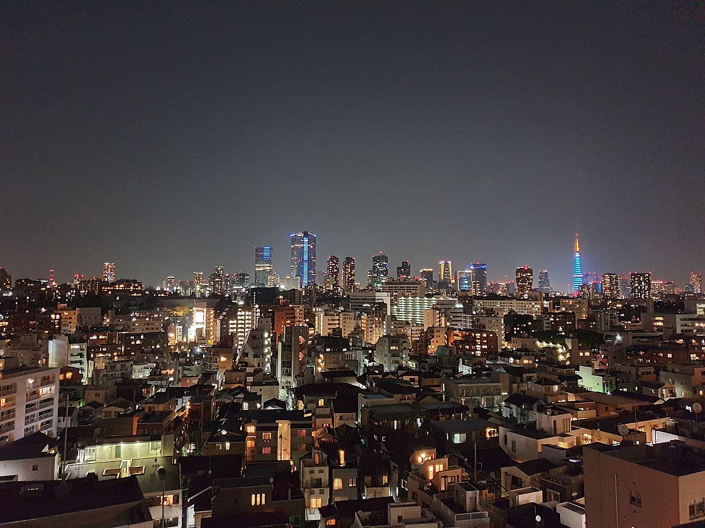

TAKAO 36 SAUNA (TAKAO 36 SAUNA)
★ 평점: 3.8 / 5.0 (2291 리뷰)

📖 시설 소개 및 상세 설명
하치오지·히노에 자리한 도심형 스파 명소 'TAKAO 36 SAUNA'은(는) 바쁜 일상에서 벗어나 여유로운 힐링을 즐길 수 있는 공간입니다. 특히 도쿄 온천 등 방문객의 눈길을 사로잡는 차별화된 매력을 갖추고 있어 지역 주민과 여행객 모두에게 사랑받고 있습니다. 깨끗하게 유지되는 시설과 아늑한 분위기, 따뜻한 환대가 어우러져 처음 방문하는 분들도 일본 전통 온천 및 센토 문화의 진수를 편안하게 만끽할 수 있습니다.
이곳의 자랑인 온천수는 지하 1808m (인공 온천)에서 공급되는 나트륨-염화물 온천을(를) 사용하며, 약 41℃의 최적 온도에서 몸의 긴장을 부드럽게 풀어줍니다. 물에 풍부하게 담긴 성분들은 피로회복, 혈액순환, 스트레스 해소 등에 탁월한 도움을 주어 입욕 후 오랫동안 몸이 따뜻하고 개운함이 지속됩니다. 또한 온몸의 노폐물을 배출하고 피로를 싹 씻어내는 쾌적한 사우나와 상쾌한 냉탕 시설이 잘 갖춰져 있어 최근 유행하는 '토토노이(심신 안정)'를 경험하기에 완벽합니다.
목욕을 마친 이후에도 여유로운 여가 시간을 즐길 수 있도록 이용객의 편의를 고려한 다채로운 시설이 준비되어 있습니다. 청결하게 유지되는 탈의실과 파우더룸, 그리고 꼭 필요한 욕실 어메니티들이 알차게 갖춰져 있어 짐을 최소화한 가벼운 차림으로도 언제든 부담 없이 들를 수 있습니다. 도쿄 여행 일정이나 바쁜 업무 후 몸과 마음을 새롭게 리프레시할 수 있는 최적의 명소, 'TAKAO 36 SAUNA'에서 특별하고 따뜻한 온천욕의 추억을 만들어 보시기 바랍니다.